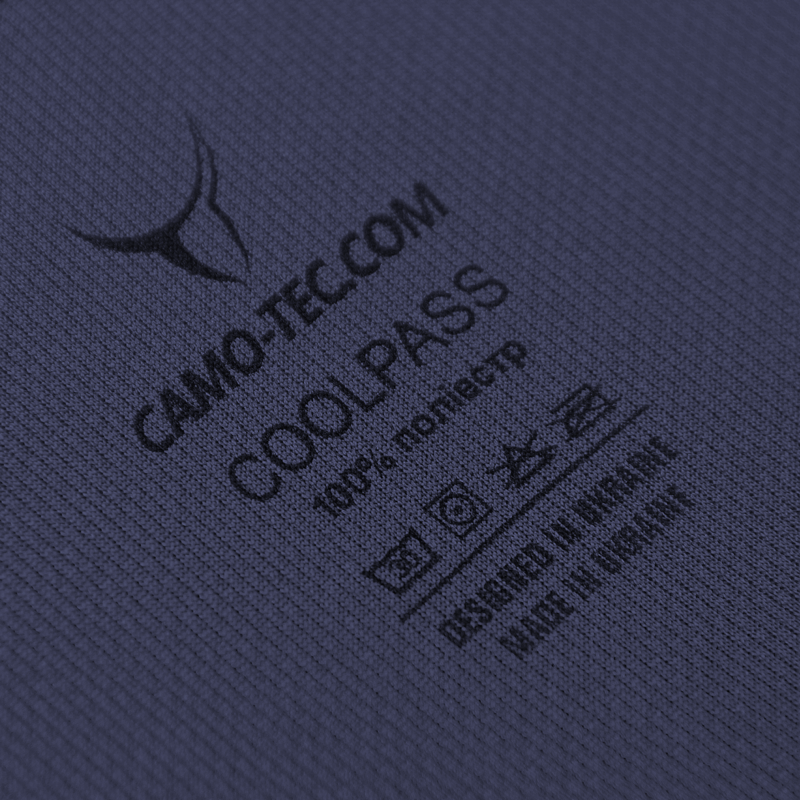
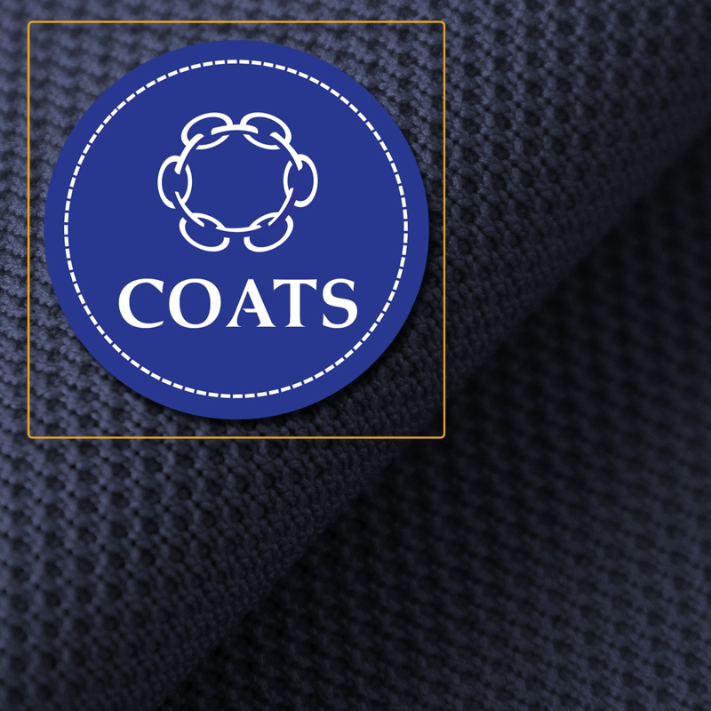
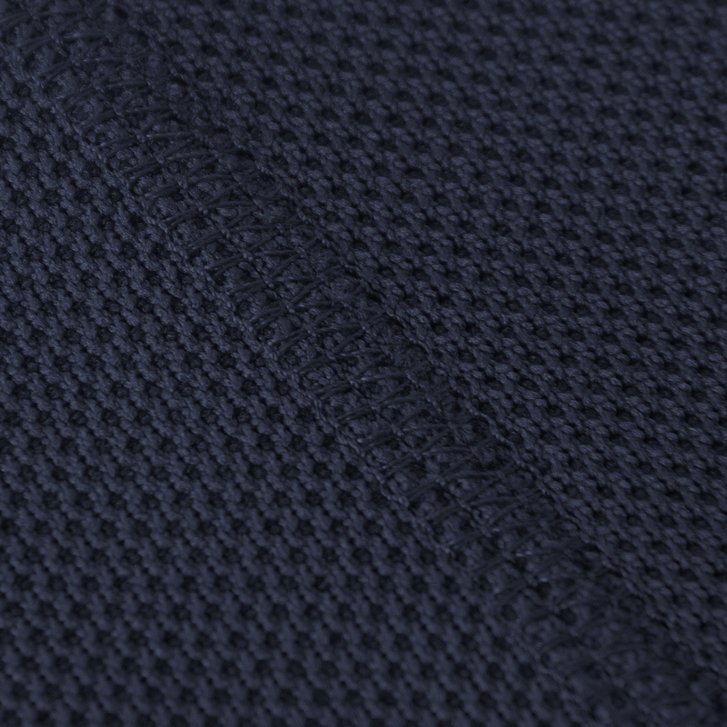
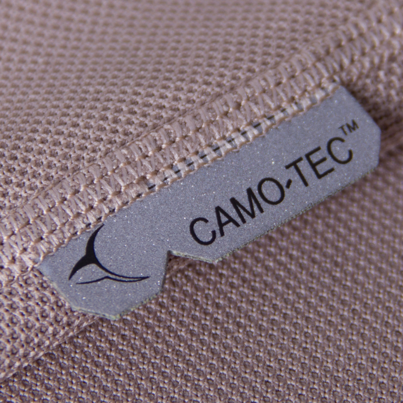
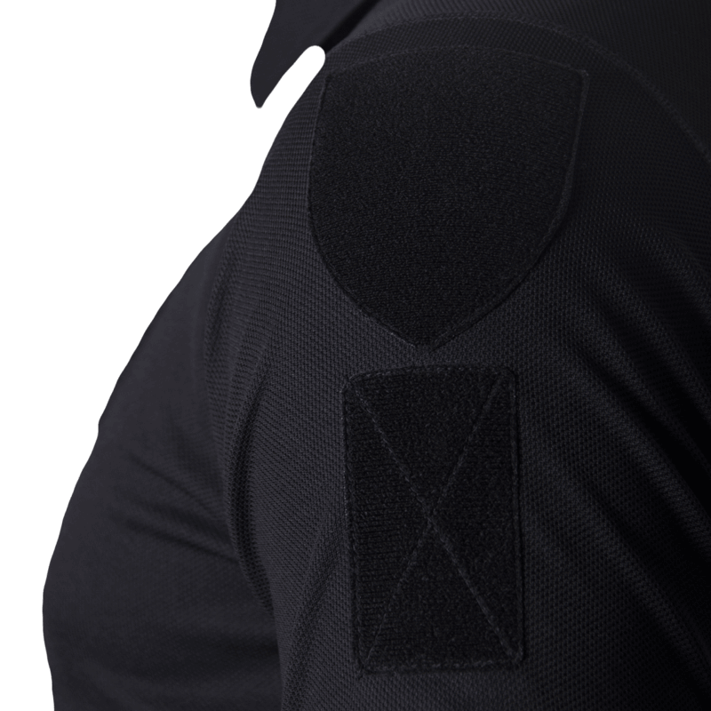
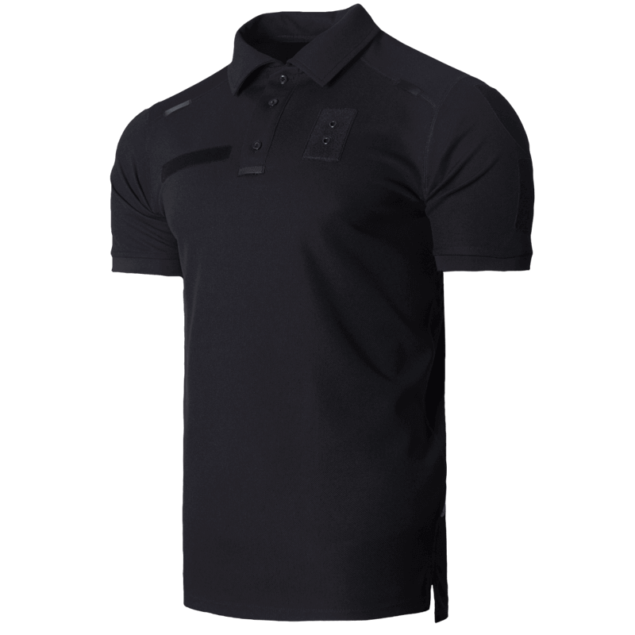

Поєднання передових технологічних матеріалів та функціонального дизайну дало можливість створити ідеальну Polo!
Остерігайтесь підробок!
1
CoolPass (тканина)
Зносостійке, еластичне полотно, НЕ ВТРАЧАЄ КОЛЬОРУ під впливом ультрафіолету (2 сезони) та після прання (75
циклів). Зовнішній вигляд завжди на 100%! навіть без прасування. Відмінні волого-потовивідні функції тканини з
системою Viking - для ефективного випаровування. Надшвидке висихання! CoolPass має протибактеріальне просочення
silver ion та захист від ультрафіолету (UPF 50+).


2
Нитка «Coats»
Світовий лідер з виробництва ниток у легкій промисловості. Кожен п'ятий виріб одягу у світі пошито ниткою
«Coats». Компанія Camo-Tec у виробництві футболок Поло використовує виключно нитку компанії «Coats».
3
Плаский шов - «безшовний» (flatlock)
Технологія з´єднання деталей в елементах футболки Поло. Тканина в місці з´єднання не втрачає еластичності,
спроможна витримувати максимальні навантаження до розтягування без деформації та розривів.


4
Світло відбивні елеиенти
Вперше! Тільки на футболках Поло компанії Camo-Tec впроваджено світловібиваючі елементи необхідні для безпеки
людини в умовах поганої видимості чи в сутінках.
5
Липучка «велкро»
Високоякісні липучки компанії типу «велкро» на футболках Поло під ІК-маркери та патчі виготовляються за
допомогою новітньої технології Laser Cut. Надійні, не вигорають, м’які на дотик та довговічні.


6
Анатомічний крій
Поліпшена ергономіка виробу. В моделях Поло Camo-Tec дотримано всіх атрибутів класичної футболки Polo, всіх
конструктивних особливостей цієї моделі та додано елементи, що адаптують її для потреб вітчизняного споживача.